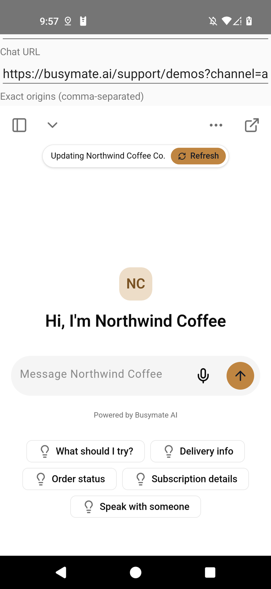
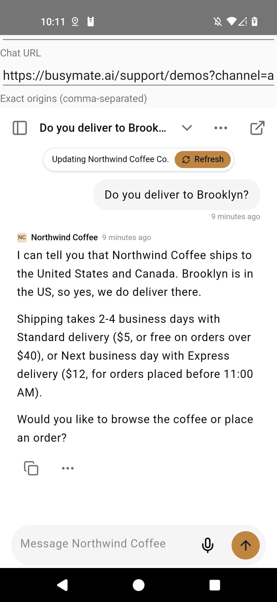
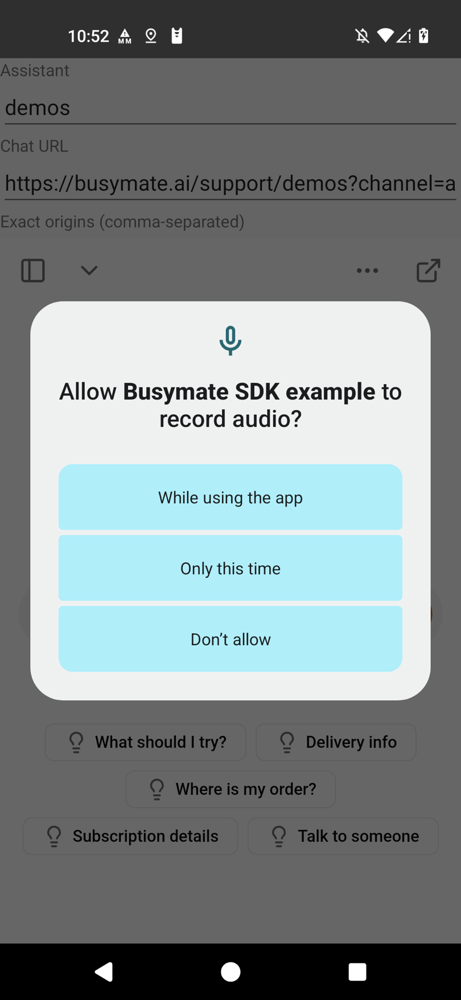

Busymate AI SDK for Android
Busymate AI hosted chat inside your Android app: a WebView host with the frozen identity bridge and a tap-triggered microphone adapter.
What it does
An independent Kotlin library module for Android. BusymateBridge answers the hosted chat's identity requests from your app (identity wire v2, immutable build 2.0.0); BusymateMicrophone grants WebView audio capture only after the user taps the chat's microphone or voice control (adapter 1.0.1). Existing v1 apps may keep BusymateAIWebViewBridge; install exactly one identity bridge per chat.
Hosted chat in a WebView
Load your workspace's chat URL with channel=android. Hosted chat updates ship independently of your app release.
Identity bridge v2
Your app returns the signed-in account and mints fresh single-use assertions from your own backend; only a hash of the account id reaches the chat.
Microphone on tap
No OS prompt on opening chat. Android asks for RECORD_AUDIO when the user taps the microphone; WEB_MESSAGE_LISTENER is required.
Example app
The example app (ai.busymate.sample) builds as a real consumer of the SDK: a settings panel on top and the hosted chat below.






Captured on a Google Pixel 4a (Android 13) running the SDK example app (ai.busymate.sample) against the Busymate AI demos workspace, 15 October 2026. Real device, real hosted chat. The permission prompt was captured on a fresh install with the 1.0.1 adapter fix (issue #7). A keyboard-open capture follows in a later update.
Install
The 1.0.2 release is a pinned source-module installation (no Maven Central or JitPack coordinate is claimed).
Clone the repository at the
1.0.2tag into your app's vendor directory.git clone --branch 1.0.2 --depth 1 https://github.com/serebano/busymate-ai-sdk-android.git vendor/busymate-ai-sdk-androidInclude the module in
settings.gradle.ktsand depend on it from your app.include(":busymate-sdk") project(":busymate-sdk").projectDir = file("vendor/busymate-ai-sdk-android/sdk") // app/build.gradle.kts dependencies { implementation(project(":busymate-sdk")) }Install both bridges in
onCreatebeforeSTARTEDand beforeloadUrl, and forwardWebChromeClient.onPermissionRequestto the microphone adapter. The reference build pins AGP 8.7.3, Gradle 8.9, Kotlin 2.0.21 and Java 17.
Identity linking and the microphone
Both bridges are installed by your app before the chat's first load. Your native app release is what installs or upgrades native SDK code; the hosted chat updates independently.
Identity linking
BusymateBridge (wire v2, build 2.0.0) asks your app for the current account and for a fresh assertion minted by your authenticated backend. An account id alone is never authentication, and the sample returns guest identity on purpose. Read identity.md.
Microphone
BusymateMicrophone (wire 1, adapter 1.0.1) requests RECORD_AUDIO only when the user taps the chat's microphone or voice control, then grants the WebView's media request for the allowed origins only. Since 1.0.1 it also shows Android's prompt when the chat's own audio request arrives before the app holds the permission, so the first tap always asks. Denied, revoked and cancelled flows are covered in microphone.md. Download the adapter from this repository's releases, with SHA256SUMS: latest release · pinned, SDK 1.0.2 · checksums.
Links
- serebano/busymate-ai-sdk-androidSource, example app, docs, changelog
- Release 1.0.2Tagged, versioned artifacts
- BusymateMicrophone.ktMicrophone adapter 1.0.1 · latest release asset, listed in SHA256SUMS
- SHA256SUMS (1.0.2)Checksums for every 1.0.2 asset, including
BusymateMicrophone.kt - busymate.ai/docs/guides/android-sdkStep-by-step integration guide
- ChangelogWhat changed in 1.0.2 (adapter attached to every release) and 1.0.1 (microphone prompt, keyboard insets)
- Identity wire contract v2Frozen bridge build 2.0.0
- Identity bridge compatibilityAcross every Busymate AI SDK